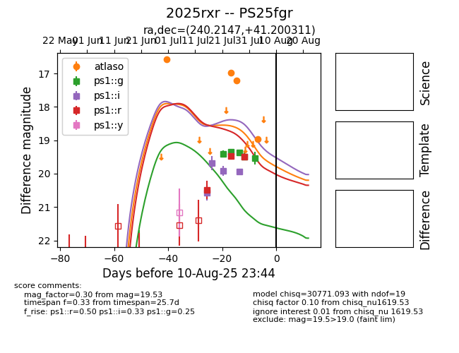

Target 2025rxr at 2025-08-11 04:04, see:
TNS: wis-tns.org/object/2025rxr
YSE: ziggy.ucolick.org/yse/transient_detail/2025rxr
alt names
2025rxr (yse,tns)
PS25fgr (panstarrs)
coordinates:
equatorial (ra, dec) = (240.2147,+41.20031)
galactic (l, b) = (65.5215,+48.93809)
photometry
last atlaso=18.97, ps1::g=19.53, ps1::i=19.94, ps1::r=19.50
4 atlaso, 5 ps1::g, 4 ps1::i, 3 ps1::r detections
